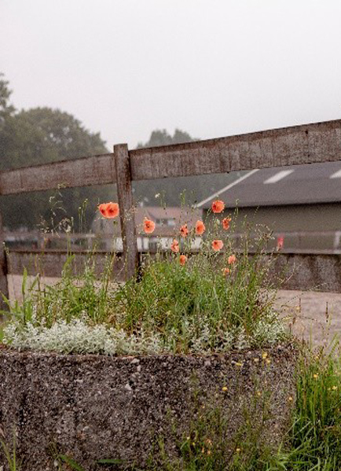

Waar staan we voor
Missie, visie en onze kernwaarden.
We streven ernaar dat elke zorgvrager veilig woont, zinvol werkt en zich kan ontwikkelen in een natuurlijke omgeving.

Onze uitgangspunten
Wat we belangrijk vinden.
- Een veilige woonomgeving met zinvolle dagbesteding en contact met dier en natuur, passend bij mogelijkheden en interesse.
- Met plezier op De Witte Hoeve verblijven en ruimte voor zelfontplooiing.
- Mogelijkheid tot integratie.
- Samen met elkaar De Witte Hoeve runnen.
Missie
Een sfeervolle woonomgeving en dagbesteding.
De Witte Hoeve heeft als doel om een sfeervolle woonomgeving en dagbesteding te bieden aan zorgvragers met een matige tot ernstige verstandelijke beperking, al dan niet in combinatie met moeilijk verstaanbaar gedrag, zowel mobiel als immobiel. De zorgvrager staat centraal, voelt zich veilig en begrepen, en krijgt persoonlijke aandacht. Dier en natuur worden ingezet om moeilijk verstaanbaar gedrag te voorkomen. We investeren in gemotiveerde en goed gekwalificeerde medewerkers en zien omgeving en medewerkers als belangrijke onderdelen van kwaliteit van zorg.
Sfeer
Een veilige, warme omgeving.
Rust en vertrouwenPersoonlijk
Ruimte voor aandacht.
De zorgvrager centraalInvesteren
Gemotiveerde medewerkers.
Kwaliteit van zorgVisie
Kijken naar mogelijkheden en talenten.
Individueel begeleidingsplan
Bij elke zorgvrager kijken we naar individuele mogelijkheden en leggen die vast in een begeleidingsplan.
Natuur en dier
Door ruimte, dier en natuur in te zetten, kan moeilijk verstaanbaar gedrag deels worden voorkomen.
Elkaars kwaliteiten
We kijken naar de mogelijkheden en interesses van zorgvragers en medewerkers. Zo waarderen we iedereen op zijn talenten.